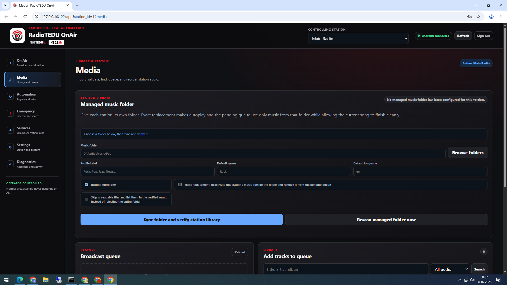
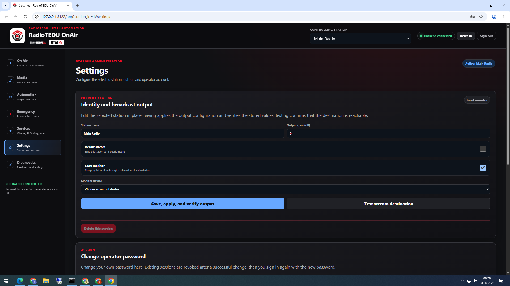

RadioTEDU OnAirCanlı klasörlerTürkçe
Şarkı ekleme ve otomatik yayın rehberi
Bu belge, teknik olmayan bir görevlinin şarkıyı doğru radyo klasörüne koymasını ve OnAir uygulamasının parçayı kendiliğinden kütüphaneye alıp sıraya eklemesini anlatır.
Bu bilgisayarda doğrulandı: Bir test parçası canlı Energize klasörüne kopyalandı; yaklaşık 10–15 saniye içinde veritabanına alındı ve dosya kaldırılınca otomatik pasifleştirildi. Yayın yeniden başlatılmadı.
1. Hangi klasöre koymalıyım?
| Yayın | Canlı klasör | Uygulama / mount | İçerik kuralı |
|---|---|---|---|
| Classical | H:\RadioTEDU Songs\Classical | /classic, /classic-low, /classic-flac | Gerçek klasik eserler. “No Copyright”, “Royalty Free”, stok/video müziği koymayın. |
| Lo-Fi | H:\RadioTEDU Songs\lofi | /lofi, /lofi-low | Lo-Fi ve izinli bağımsız içerik. No-copyright içerik yalnızca burada kabul edilebilir. |
| Pop / RadioTEDU | H:\RadioTEDU Songs\Pop | /radio, /radio-low | Ticari/izinli pop. No-copyright veya “background/stock music” koymayın. |
| Jazz / Cazz | H:\RadioTEDU Songs\Jazz | /cazz, /cazz-low, /cazz-flac | Jazz. FLAC yalnızca bu istasyonda desteklenir. |
| Rock | H:\RadioTEDU Songs\Rock | /rock, /rock-low | Rock. Video başlığı, stok müzik ve no-copyright paketleri koymayın. |
| Energize | H:\RadioTEDU Songs\Energize | /energize, /energize-low | Gerçekten enerjik: dance, electronic, pop-dance, house, rock-energy vb. Şu an güvenli aktif kütüphane 84 parçadır; eski no-copyright klasörünü kullanmayın. |
Önemli: H:\Broadcast\RadioTEDU-OnAir\Playlists\energize\audio eski/legacy klasördür. İçeriğinin büyük bölümü “Copyright Free/No Copyright Music” olarak etiketli olduğundan Energize canlı klasörüne otomatik aktarılmadı.
2. Şarkıyı hazırlama
Adım A — Dosyayı tamamlayın
Dosyayı önce bilgisayarınızda tamamen indirin/kopyalayın. Kopyalama sürerken canlı klasöre bırakmayın; dosya yarım okunabilir.
Adım B — Etiketleri doldurun
Artist, Title, Album ve mümkünse Genre alanlarını yazın. MusicBrainz Picard gibi bir etiketleyici kullanabilirsiniz. Türkçe parça eklemeyin.
Adım C — Uygun format
MP3, FLAC, M4A, AAC/ADTS, WAV, OGG/Opus ve diğer desteklenen ses uzantıları kabul edilir. Arşiv/ZIP dosyasını doğrudan koymayın.

3. Canlı klasöre koyma
- Windows Dosya Gezgini'ni açın.
- Yukarıdaki tabloda doğru istasyon klasörünü açın.
- Hazırladığınız ses dosyasını klasöre kopyalayın. Alt klasörler de izlenir.
- Kopyalama tamamen bitince dosya boyutunun sabit kaldığını kontrol edin.
- Normalde hiçbir düğmeye basmanız gerekmez. Watcher iki aynı gözlemden sonra dosyayı doğrular; pratikte yaklaşık 10–15 saniye içinde kütüphaneye alır.
- Parça mevcut şarkının ortasında kesilmez; otomatik kuyrukta uygun bir sonraki sıraya girer.
İşleyiş: klasör taraması → metadata/oynatılabilirlik kontrolü → istasyon kütüphanesine ekleme → kuyruk otomatik doldurma. Bilgisayarı veya yayını yeniden başlatmak gerekmez.
4. Kontrol etme
- OnAir'de ilgili istasyonu seçin ve Media sayfasına gidin.
- Managed music folder alanının doğru yolu gösterdiğini kontrol edin.
- Beklemek istemiyorsanız Rescan managed folder now düğmesine basın.
- Sonuç “verified / watching” ve hata sayısı 0 olmalıdır.
- Şarkı sıraya hemen görünmeyebilir; mevcut kuyruk doluysa parça, kuyrukta yer açıldığında seçilir. Bu, yayının kesilmesini önleyen davranıştır.

5. Metadata ve MusicBrainz kuralı
- Önce dosyanın iç etiketlerini kullanın; dosya adı yalnızca yedek ipucudur.
- Artist/Title kesin değilse tahmin etmeyin. MusicBrainz ile exact title + artist eşleşmesi bulunmadan parçayı canlıya almayın.
- Bu bilgisayarda 28 kesin eşleşme düzeltilip dosyanın içine yazıldı; orijinal dosyalar geri dönüş yedeğinde tutuluyor.
- Classical canlı kütüphanesindeki 40 adet “No Copyright/Royalty Free/Free Music” parça diğer istasyonlarda çalmaması için autoplay dışına alındı. Dosyalar silinmedi.
- Artist, Title ve Album değişikliğinden sonra dosyayı yeniden adlandırmayın; yeniden tarama aynı dosyayı izler.
6. Bilgisayar açılışı ve internet kopması
- RadioTEDU.OnAir.Supervisor Windows servisi Automatic olarak kuruludur ve Tcpip + Dnscache bağımlılıklarına sahiptir.
- Servis çökmesi durumunda 5, 15 ve 30 saniyelik yeniden başlatma denemeleri vardır.
- Icecast bağlantısı için uygulama 1, 2, 4, 8, 15 ve 30 saniyelik artan tekrar denemeleri yapar; internet geri gelince mount yeniden bağlanır.
- Altı aktif istasyonda broadcast_autostart_enabled=true; AI kapalı, voting kapalı, Juke kapalıdır.
- İnternet geri gelmezse yerel program akışı korunur; bağlantı geldiğinde encoder tekrar bağlanır.
7. Bir şey çalışmazsa
| Belirti | Çözüm |
|---|---|
| Dosya görünmüyor | Doğru istasyon klasörünü, ses uzantısını ve kopyalamanın bitmiş olduğunu kontrol edin; ardından Rescan düğmesine basın. |
| Metadata boş | Dosyayı MusicBrainz Picard ile etiketleyin; sonra dosya değişikliğini kaydedip watcher'ın yeniden taramasını bekleyin. |
| Şarkı hemen çalmıyor | Bu normaldir: mevcut şarkı kesilmez. Kuyrukta yer açılınca parça seçilir. |
| Mount kesildi | Bilgisayarı yeniden başlatmayın. 1–30 saniyelik Icecast yeniden bağlanma döngüsünü bekleyin ve OnAir sağlık ekranını kontrol edin. |
| Hata devam ediyor | Dosyayı canlı klasörden çıkarıp masaüstündeki karantina klasörüne alın; görevliye istasyon, dosya adı ve saat bilgisini verin. |
Son doğrulama: 22 Ağustos 2026. Bu kılavuzda parola, Icecast gizli anahtarı veya kullanıcı sırrı bulunmaz.